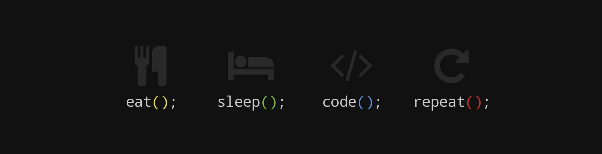

<app-menu>
  <ng-template #content>
    <div class="links child">
      <button class="btn btn-danger" (click)="scrollToElement(target)">About</button>
      <br>
      <button class="btn btn-danger" (click)="scrollToElement(skills)">Skills</button>
    </div>
        <div class="image">
          
        </div>
<div class="media about child" id="section1" #target>
        <div class="media-body">
          <strong><h4 id="mediaTitle" class="mt-0">About Me</h4></strong>
          
          <hr>
          <p class="description"> I graduated with my Bachelor's from SUNY Albany in 2017.
            I then moved to Austin about 2 years ago to seek new opportunities and steady my 
            career path. Sure enough, I came across The Coding Bootcamp at UT, where I learned
            to code from a full stack prespective. Since starting, I've learned how to follow an MVC model, 
            create a RESTful API, create an object oriented program, collaborate on GitHub, run browser and unit tests, 
            picked up many new languages and libraries such as React.js, and much more. Since graduating the boot camp 
            in April 2020, I've contributed to several open-source projects and started working at a freelance company, 
            helping to develop custom WordPress code. I'm passionate about making creative web applications and solving 
            complex problems with elegant yet easily maintainable code.</p>
        </div>
</div>
<div class="row child" id="section2" #skills>
<div class="media col m-4 flavors">
  <div class="media-body">
    <strong><h4 id="mediaTitle" class="mt-0">Technical Skills:</h4></strong>
    <ul class="list">
      <li>HTML</li>
      <li>CSS</li>
      <li>JavaScript</li>
      <li>React.js</li>
      <li>SQL</li>
      <li>MongoDB</li>
      <li>TypeScript</li>
      <li>Angular</li>
      <li>Jest</li>
      <li>REST API</li>
      <li>OOP</li>
      <li>Node.js</li>
      <li>Postman</li>
      <li>Bootstrap</li>
    </ul>
  </div>
</div>
<div class="media col m-4 flavors">
  <div class="media-body">
    <strong><h4 id="mediaTitle" class="mt-0">Soft Skills:</h4></strong>
    <ul class="list">
      <li>Team player</li>
      <li>Communication</li>
      <li>Time management</li>
      <li>Orginization</li>
      <li>Detail-oriented</li>
      <li>Problem solver</li>
      <li>Driven</li>
      <li>Compassionate</li>
      <li>Innovative</li>
      <li>Tenacious</li>
      <li>Multi-tasking</li>
      <li>Quick learner</li>
    </ul>
  </div>
</div>
</div>
</ng-template>
</app-menu>


